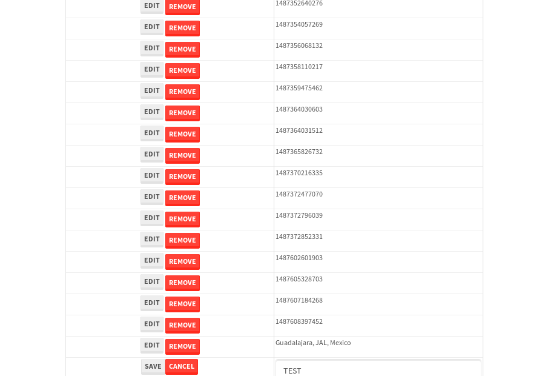

tbColumn.Grid Sorting - 26.072sTests: 5Skipped: 0Failures: 0 should sort data in ascending order then on descending order when sorting by Order Id column - 5.342sTests passed: 100.00%should order data in ascending order when click-sorting an unsorted text column - 4.849sTests passed: 100.00%should order data in descending order when click-sorting an ascending-sorted text column - 5.505sTests passed: 100.00%should order data in ascending order when click-sorting an unsorted date column - 5.196sTests passed: 100.00%should order data in descending order when click-sorting twice an unsorted date column - 5.178sTests passed: 100.00%
tbColumn.Grid Components - 4.166sTests: 3Skipped: 0Failures: 0 should print grid - 1.524s***Skipped***Tests passed: 0%should export grid - 1.453s***Skipped***Tests passed: 0%should show column selector - 1.189sTests passed: 100.00%
tbSingleForm.Form validations - 2.582sTests: 2Skipped: 0Failures: 0 should have an empty required field - 1.359sTests passed: 100.00%should not be able to click on save - 1.223sTests passed: 100.00%
Tubular Filters.tbColumnFilter - 107.839sTests: 12Skipped: 0Failures: 0 should cancel filtering when clicking outside filter-popover - 9.266sTests passed: 100.00%should disable Value text-input for "None" filter - 6.803sTests passed: 100.00%should disable apply button for "None" filter - 6.757sTests passed: 100.00%should decorate popover button when showing data is being filtered for its column - 12.203sTests passed: 100.00%should correctly filter data for the "Equals" filtering option - 8.372sTests passed: 100.00%should correctly filter data for the "Not Equals" filtering option - 8.277sTests passed: 100.00%should correctly filter data for the "Contains" filtering option - 8.334sTests passed: 100.00%should correctly filter data for the "Not Contains" filtering option - 8.989sTests passed: 100.00%should correctly filter data for the "Starts With" filtering option - 6.927sTests passed: 100.00%should correctly filter data for the "Not Starts With" filtering option - 6.954sTests passed: 100.00%should correctly filter data for the "Ends With" filtering option - 6.853sTests passed: 100.00%should correctly filter data for the "Not Ends With" filtering option - 7sTests passed: 100.00%
Tubular Filters.tbColumnDateTimeFilter - 137.937sTests: 12Skipped: 0Failures: 0 should cancel filtering when clicking outside filter-popover - 7.836sTests passed: 100.00%should disable Value text-input for "None" filter - 6.891sTests passed: 100.00%should disable apply button for "None" filter - 7.06sTests passed: 100.00%should clear filtering when clicking on Clean button - 18.148sTests passed: 100.00%should decorate popover button when showing data is being filtered for its column - 11.876sTests passed: 100.00%should correctly filter data for the "Equals" filtering option - 6.78sTests passed: 100.00%should correctly filter data for the "Not Equals" filtering option - 7.396sTests passed: 100.00%should correctly filter data for the "Between" filtering option - 12.637sTests passed: 100.00%should correctly filter data for the "Greater-or-equal" filtering option - 12.028sTests passed: 100.00%should corretlly filter data for the "Greater" filtering option - 12.2sTests passed: 100.00%should correctly filter data for the "Less-or-equal" filtering option - 12.272sTests passed: 100.00%should correctly filter data for the "Less" filtering option - 12.101sTests passed: 100.00%
Tubular Filters.tbColumnOptionsFilter - 81.58sTests: 3Skipped: 0Failures: 0 should cancel filtering when clicking outside filter-popover - 9.128sTests passed: 100.00%should decorate popover button when showing data is being filtered for its column - 11.856sTests passed: 100.00%should filter column-elements in accordance to the selected filter when selecting a single option - 49.605sTests passed: 100.00%
Tubular Filters.tbTextSearch - 48.002sTests: 5Skipped: 0Failures: 0 min-chars is not set - 1.028sTests passed: 100.00%should filter data in searchable-column customer name to matching inputted text, starting from 3 characters - 6.743sTests passed: 100.00%should filter data in searchable-column shipper city to matching inputted text, starting from 3 characters - 11.826sTests passed: 100.00%should show clear button when there is inputted text only - 6.452sTests passed: 100.00%should clear filtering when clicking clear button - 16.527sTests passed: 100.00%
tbForm related components.tbCheckboxField - 6.014sTests: 2Skipped: 0Failures: 0 should save changes on "SAVE" - 2.651sTests passed: 100.00%should discard changes on "CANCEL" - 2.107sTests passed: 100.00%
tbForm related components.tbDropDownEditor - 11.129sTests: 5Skipped: 0Failures: 0 should set initial input value to the value of "value" attribute when defined - 1.657sTests passed: 100.00%should show the component name value in a label field when "showLabel" attribute is true - 1.872sTests passed: 100.00%should show a help field equal to this attribute, is present - 1.724sTests passed: 100.00%should submit modifications to item/server when clicking form "Save" - 2.783sTests passed: 100.00%should NOT submit modifications to item/server when clicking form "Cancel" - 2.352sTests passed: 100.00%
tbForm related components.tbTextArea - 17.259sTests: 7Skipped: 0Failures: 0 should set initial input value to the value of "value" attribute when defined - 1.983sTests passed: 100.00%should be invalidated when the number of chars is not in the range of "min" and "max" attributes - 2.458sTests passed: 100.00%should show the component name value in a label field when "showLabel" attribute is true - 1.64sTests passed: 100.00%should show a help field equal to this attribute, is present - 1.909sTests passed: 100.00%should require the field when the attribute "required" is true - 2.937sTests passed: 100.00%should submit modifications to item/server when clicking form "Save" - 3.275sTests passed: 100.00%should NOT submit modifications to item/server when clicking form "Cancel" - 2.173sTests passed: 100.00%
tbForm related components.tbDateEditor - 13.467sTests: 6Skipped: 0Failures: 1 should set initial date value to the value of "value" attribute when defined - 2.117sTests passed: 100.00%should be invalidated when the date is not in the range of "min" and "max" attributes - 2.237sTests passed: 100.00%should show the component name value in a label field when "showLabel" attribute is true - 1.673sTests passed: 100.00%should show a help field equal to this attribute, is present - 1.683sTests passed: 100.00%should submit modifications to item/server when clicking form "Save" - 2.702sExpected false to be true.✗Tests passed: 0.00%should NOT submit modifications to item/server when clicking form "Cancel" - 1.983sTests passed: 100.00%
tbForm related components.tbTypeaheadEditor - 18.326sTests: 7Skipped: 0Failures: 0 should show an options list when there is an API-info/component entered-data - 2.381sTests passed: 100.00%should select the option clicked - 2.52sTests passed: 100.00%should show a "delete" button when an option/match is selected, and delete the option if button is clicked - 2.561sTests passed: 100.00%should show a label value equal to the component name when "showLabel" attribue is true - 1.796sTests passed: 100.00%should require a value when "require" attribute is true - 2.397sTests passed: 100.00%should submit modifications to item/server when clicking form "Save" - 3.546sTests passed: 100.00%should NOT submit modifications to item/server when clicking form "Cancel" - 1.996sTests passed: 100.00%
tbForm related components.tbSimpleEditor - 19.445sTests: 9Skipped: 0Failures: 0 should set initial input value to the value of "value" attribute when defined - 1.716sTests passed: 100.00%should be invalidated when the number of chars is not in the range of "min" and "max" attributes - 2.483sTests passed: 100.00%should show the component name value in a label field when "showLabel" attribute is true - 1.977sTests passed: 100.00%should set input placeholder to the value of "placeholder" attribute - 2.56sTests passed: 100.00%should validate the control using the "regex" attribute, if present - 1.715sTests passed: 100.00%should show a help field equal to this attribute, is present - 1.743sTests passed: 100.00%should require the field when the attribute "required" is true - 1.845sTests passed: 100.00%should submit modifications to item/server when clicking form "Save" - 2.956sTests passed: 100.00%should NOT submit modifications to item/server when clicking form "Cancel" - 1.858sTests passed: 100.00%
tbForm related components.tbNumericEditor - 17.395sTests: 7Skipped: 0Failures: 0 should set initial component value to the value of "value" attribute when defined - 1.634sTests passed: 100.00%should be invalidated when the entered number is not in the range of "min" and "max" attributes - 2.15sTests passed: 100.00%should show the component name value in a label field when "showLabel" attribute is true - 1.68sTests passed: 100.00%should show a help field equal to this attribute, is present - 2.169sTests passed: 100.00%should require the field when the attribute "required" is true - 1.919sTests passed: 100.00%should submit modifications to item/server when clicking form "Save" - 4.952sTests passed: 100.00%should NOT submit modifications to item/server when clicking form "Cancel" - 2.223sTests passed: 100.00%
tbForm Connection Error NoModelKey - 2.516sTests: 1Skipped: 0Failures: 0 tbForm connection error functionality - 0.496sTests passed: 100.00%
tbForm Connection Error NoServerUrl - 3.379sTests: 1Skipped: 0Failures: 0 tbForm connection error functionality - 0.424sTests passed: 100.00%
tbGridComponents - 32.532sTests: 6Skipped: 0Failures: 4 should add item with newRow method - 4.127sExpected 'EDIT REMOVE TEST' not to be 'EDIT REMOVE TEST'.✗Tests passed: 50.00%should add item with newRow method and cancel action - 0.964sTests passed: 100.00%should update item with tbSaveButton - 2.576sExpected '' to be 'TEST'.✗Tests passed: 0.00%should NOT update item on cancel Update action - 1.122sFailed: ElementNotVisibleError✗Tests passed: 0.00%should remove item with tbRemoveButton - 21.415sExpected 60 not to be 60, 'should remove the row from the table'.✗Tests passed: 50.00%should NOT remove item on cancel Remove action - 0.94sTests passed: 100.00%
tbGridPager.navigation buttons - 8.869sTests: 1Skipped: 0Failures: 0 should perform no action when clicking on the numbered navigation button corresponding to the current-showing results page - 1.226sTests passed: 100.00%
tbGridPager.navigation buttons.first/non-last results page related functionallity - 4.036sTests: 2Skipped: 0Failures: 0 should disable "first" and "previous" navigation buttons when in first results page - 1.508sTests passed: 100.00%should enable "last" and "next" navigation buttons when in a results page other than last - 2.528sTests passed: 100.00%
tbGridPager.navigation buttons.last/non-first results page related functionallity - 3.606sTests: 2Skipped: 0Failures: 0 should disable "last" and "next" navigation buttons when in last results page - 1.78sTests passed: 100.00%should enable "first" and "previous" navigation buttons when in a results page other than first - 1.826sTests passed: 100.00%
tbGridPager.page navigation - 7.571sTests: 5Skipped: 0Failures: 0 should go to next results page when clicking on next navigation button - 1.718sTests passed: 100.00%should go to previous results page when clicking on previous navigation button - 1.723sTests passed: 100.00%should go to last results page when clicking on last navigation button - 1.647sTests passed: 100.00%should go to first results page when clicking on first navigation button - 1.259sTests passed: 100.00%should go to corresponding results page when clicking on a numbered navigation button - 1.224sTests passed: 100.00%
tbGridPagerInfo - 4.655sTests: 2Skipped: 0Failures: 0 should show text in accordance to numbered of filter rows and current results-page - 1.392sTests passed: 100.00%should show count in footer - 0.55sTests passed: 100.00%
tbHttp - 18.541sTests: 8Skipped: 1Failures: 0 should be authenticated - 3.746sTests passed: 100.00%retrieve data - 2.359sTests passed: 100.00%should not login bad credentials - 2.181sTests passed: 100.00%should have a refresh token - 2.534sTests passed: 100.00%should remove authentication - 2.38sTests passed: 100.00%get method-Is not authenticated - 2.448sTests passed: 100.00%post method-Is not authenticated - 2.89sTests passed: 100.00%should regenerate access token on post - 0.001s***Skipped***Tests passed: 0%
tbPageSizeSelctor - 10.287sTests: 4Skipped: 0Failures: 0 should filter up to 10 data rows per page when selecting a page size of "10" - 2.661sTests passed: 100.00%should filter up to 20 data rows per page when selecting a page size of "20" - 1.818sTests passed: 100.00%should filter up to 50 data rows per page when selecting a page size of "50" - 2.571sTests passed: 100.00%should filter up to 100 data rows per page when selecting a page size of "100" - 1.772sTests passed: 100.00%
tbRowSelectable - 9.651sTests: 2Skipped: 0Failures: 0 selected rows - 5.119sTests passed: 100.00%unselected rows - 2.997sTests passed: 100.00%
tbSingleForm - 20.372sTests: 8Skipped: 0Failures: 1 should load correct info - 2.499sTests passed: 100.00%should change customer name - 2.477sTests passed: 100.00%should save it - 2.963sFailed: Element is not enabled✗Tests passed: 0.00%should clear the inputs - 2.35sTests passed: 100.00%should update - 2.594sTests passed: 100.00%should reset editor - 2.787sTests passed: 100.00%should not save if not Changes - 2.356sTests passed: 100.00%should not be able to click on save - 2.343sTests passed: 100.00%


{kind=link}